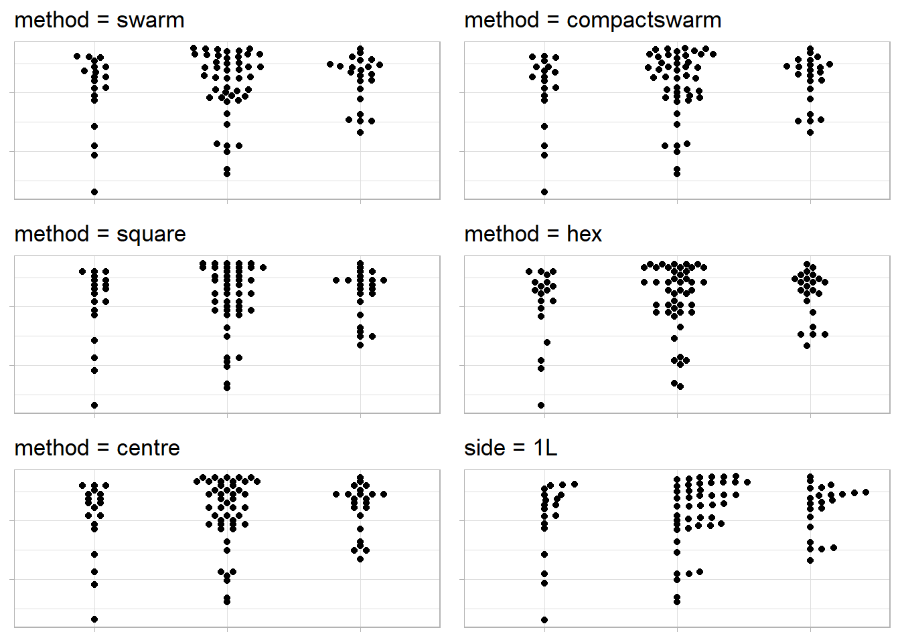
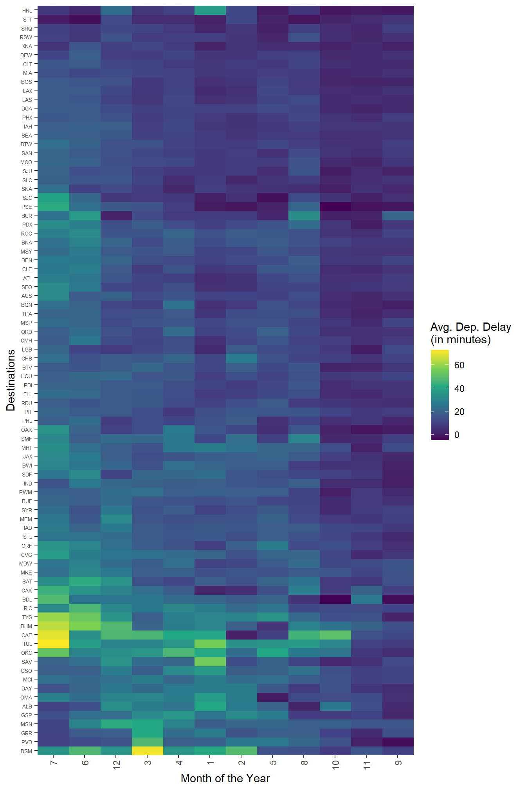
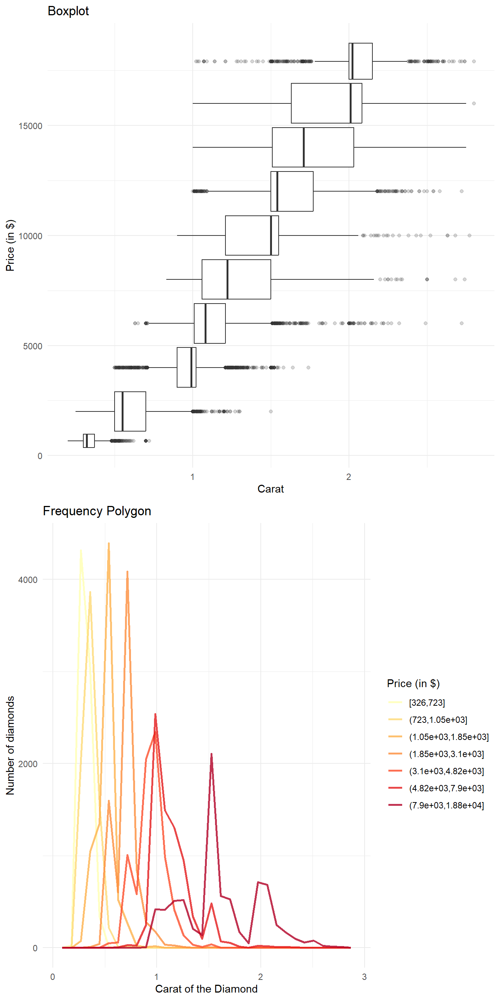

library(tidyverse)
library(gt)
library(RColorBrewer)
data("diamonds")Chapter 11
Exploratory data analysis
11.3.3 Exercises
Question 1
Explore the distribution of each of the x, y, and z variables in diamonds. What do you learn? Think about a diamond and how you might decide which dimension is the length, width, and depth.
Upon exploratory data analysis (code shown below), I learn the following insights: —
There are outliers in distribution of
x, there are eight diamonds with zero value ofx, but no outliers on higher side.There are outliers in distribution of
y, there are eight diamonds with zero value ofy, and 2 outliers on higher side.There are outliers in distribution of
z, there are 20 diamonds with zero value ofz, and 1 outlier on higher side.The correlation between the variables show that
x,y, andzare strongly positively correlated amongst themselves and with the weight (carat).The mean values of
x,yandzare 5.73, 5.73 and 3.54. Thus, it is possible thatxandyrepresent either of length and width, whilezrepresents depth.Now, upon visualizing the density plots of
x,yandz, we see thatxandyare similar distributed so, they must be length and breadth, butzis smaller in value. So,zmust be depth.
Code
data("diamonds")
diamonds |>
ggplot(aes(x = x,
fill = (x == 0 | x > 12))) +
geom_histogram(binwidth = 0.1) +
coord_cartesian(ylim = c(0,10))
diamonds |>
ggplot(aes(x = y,
fill = (y == 0 | y > 12))) +
geom_histogram(binwidth = 0.1) +
coord_cartesian(ylim = c(0,10))
diamonds |>
ggplot(aes(x = z,
fill = (z == 0 | z > 12))) +
geom_histogram(binwidth = 0.1) +
coord_cartesian(ylim = c(0,20))
diamonds |>
summarize(x = mean(x),
y = mean(y),
z = mean(z))
diamonds |>
filter(x == 0 | z == 0 | y == 0)
diamonds |>
select(x, y, z) |>
pivot_longer(cols = everything(),
names_to = "dimension",
values_to = "value") |>
ggplot() +
geom_density(aes(x = value,
col = dimension)) +
theme_classic() +
theme(legend.position = "bottom") +
coord_cartesian(xlim = c(0, 10))Question 2
Explore the distribution of price. Do you discover anything unusual or surprising? (Hint: Carefully think about the binwidth and make sure you try a wide range of values.)
The distribution of price shows a surprising fact in Figure 1 that there are no diamonds priced between $1,450 and $1,550.
diamonds |>
ggplot(aes(price)) +
geom_histogram(binwidth = 10,
fill = "lightgrey",
color = "darkgrey") +
coord_cartesian(xlim = c(500, 2000)) +
scale_x_continuous(breaks = seq(from = 500, to = 2000, by = 100)) +
theme_minimal()
Question 3
How many diamonds are 0.99 carat? How many are 1 carat? What do you think is the cause of the difference?
There are only 23 diamonds of 0.99 carat, but 1,558 diamonds of 1 carat.
The possible cause of this difference is that the weight recorder or measurement instrument rounded off to the nearest integer, especially if carat was 0.99.
diamonds |>
select(carat) |>
filter(carat == 0.99 | carat == 1) |>
group_by(carat) |>
count()# A tibble: 2 × 2
# Groups: carat [2]
carat n
<dbl> <int>
1 0.99 23
2 1 1558Question 4
Compare and contrast coord_cartesian() vs. xlim() or ylim() when zooming in on a histogram. What happens if you leave binwidth unset? What happens if you try and zoom so only half a bar shows?
Both coord_cartesian() and xlim() / ylim() serve a similar purpose of adjusting the visible range of data in a plot, but they do so in slightly different ways. The Figure 2 shows the difference.
xlim() and ylim() are functions in R that directly modify the data range that is displayed on the x-axis and y-axis, respectively. The xlim() / ylim() replace all values outside the range into NAs . They remove the data outside the limits. They can be used to zoom in on specific portions of the plot.
Pros:
- Can help emphasize specific details or patterns in the data after removal of outliers.
Cons:
Data points outside the specified range are removed from the plot, potentially leading to a loss of context.
If used improperly, it can distort the visual representation of the data, making it appear more or less significant than it actually is.
coord_cartesian() allows us to adjust the visible range of data without altering the underlying data.
Pros:
It does not remove any data points from the plot; it only changes the visible range.
Useful when you want to focus on a specific part of the plot while still having access to the full data context.
Cons:
- If there are outliers or extreme values, they might still affect the appearance of the plot.
Comparison
| Aspect | coord_cartesian() |
xlim()/ylim() |
|---|---|---|
| Purpose | Adjust visible range without altering data | Set specific data range to be displayed, removes data outside the range |
| Data Integrity | Maintains original data and scaling | Can exclude data points outside range |
| Context | Preserves overall data context | May lose context due to excluded data; or reveal new insights upon removal of outliers. |
| Impact on Plot | Adjusts only the visible area | Alters axes scaling and data representation |
| Handling outliers | Keeps outliers within context | Remove outliers outside the specified range |
| Control over Range | Limited control over axes scaling | Precise control over displayed range |
| Suitability for Histograms | Recommended for maintaining bin sizes | Can distort histogram representation |
gridExtra::grid.arrange(
diamonds |>
ggplot(aes(x = y)) +
geom_histogram(binwidth = 0.1) +
ylim(0, 1000) +
xlim(0, 10) +
labs(subtitle = "xlim and ylim remove data outside the limits, \neg. counts > 1000; or the observation at zero"),
diamonds |>
ggplot(aes(x = y)) +
geom_histogram(binwidth = 0.1) +
coord_cartesian(ylim = c(0, 1000),
xlim = c(0, 10)) +
labs(subtitle = "coord_cartesian preserves data outside the limits, \neg. counts > 1000; or the observation at zero"),
ncol = 2)
11.4.1 Exercises
Question 1
What happens to missing values in a histogram? What happens to missing values in a bar chart? Why is there a difference in how missing values are handled in histograms and bar charts?
In a histogram, missing values are typically ignored. If there are missing values in your data, they won’t be placed into any bin and won’t contribute to the creation of bars in the histogram. Thus, histogram only shows the distribution of the non-missing values.
In a bar chart, which is used to display categorical data, missing values are treated as a distinct category. When you create a bar chart using ggplot2, each unique category in your data is represented by a bar. If there are missing values, ggplot2 will include a separate bar to represent the missing category, often labeled as “NA” or “Missing”.
The difference in how missing values are handled in histograms and bar charts arises from their underlying purposes:
Histograms are primarily used to visualize the distribution of continuous or numeric data. Since missing values don’t have a specific numeric value to be placed into bins, it’s common practice to exclude them.
Bar charts, on the other hand, are used to compare the frequency or count of different categories. Missing values are treated as a category themselves.
In summary, the distinction in handling missing values is based on the type of data being visualized and the purpose of each plot. Histograms focus on the distribution of non-missing numeric data, while bar charts emphasize the comparison of categorical data, including missing values as a separate category.
# Set a random seed for reproducibility
set.seed(123)
# Create a sample dataset with missing values
n = 200
df = data.frame(
Category = sample(x = c("A", "B", "C", "D"),
size = n,
replace = TRUE),
Value = rnorm(n)
)
# Introduce missing values
df$Value[sample(1:n, 40)] = NA
df$Category[sample(1:n, 40)] = NA
# Create plots to demonstrate
gridExtra::grid.arrange(
ggplot(df, aes(x = Value)) +
geom_histogram(col = "grey", fill = "lightgrey") +
theme_minimal() +
labs(subtitle = "Histogram drops the missing values"),
ggplot(df, aes(x = Category)) +
geom_bar(col = "grey", fill = "lightgrey") +
theme_minimal() +
labs(subtitle = "Bar Chart includes missing values as a category"),
ncol = 2)
Question 2
What does na.rm = TRUE do in mean() and sum()?
When na.rm is set to TRUE, the function will remove any NA values from the input vector before performing the calculation. This means that the resulting mean or sum will only consider the non-missing values.
This is important because in R , NAs cannot be added or subtrated or operated upon, for example, NA + 1 = NA. Thus, even if one observation is NA, the mean or sum of the entire vector will be NA . Hence, using na.rm = TRUE is important.
mean(df$Value)[1] NAmean(df$Value, na.rm = TRUE)[1] 0.006409991sum(df$Value)[1] NAsum(df$Value, na.rm = TRUE)[1] 1.025599Question 3
Recreate the frequency plot of scheduled_dep_time colored by whether the flight was cancelled or not. Also facet by the cancelled variable. Experiment with different values of the scales variable in the faceting function to mitigate the effect of more non-cancelled flights than cancelled flights.
The best value of scales to use is scales = "free_y" so that the two facets’ y-axis are completely free and we can compare the distribution of cancelled flights vs. non-cancelled flights in Figure 3.
nycflights13::flights |>
mutate(
cancelled = is.na(dep_time),
sched_hour = sched_dep_time %/% 100,
sched_min = sched_dep_time %% 100,
sched_dep_time = sched_hour + (sched_min / 60)
) |>
# Create nice names for "cancelled" to show in the eventual plot
mutate(cancelled = as_factor(ifelse(cancelled,
"Cancelled Flights",
"Flights Not Cancelled"))) |>
ggplot(aes(x = sched_dep_time)) +
geom_freqpoly(lwd = 1) +
theme_minimal() +
facet_wrap(~cancelled,
scales = "free_y") +
labs(x = "Scheduled Departure Time (in hrs)",
y = "Number of flights") +
scale_x_continuous(breaks = seq(0, 24, 4))
11.5.1.1 Exercises
Question 1
Use what you’ve learned to improve the visualization of the departure times of cancelled vs. non-cancelled flights.
The Figure 4 shows an example to demonstrate exploratory data analysis in missing values in data-set flights of the package nycflights13 . It shows that as the day progresses, more flights get cancelled. Evening flights are more likely to get cancelled than morning flights.
nycflights13::flights |>
mutate(
cancelled = is.na(dep_time),
sched_hour = sched_dep_time %/% 100,
sched_min = sched_dep_time %% 100,
sched_dep_time = sched_hour + (sched_min / 60)
) |>
ggplot(aes(x = sched_dep_time,
y = after_stat(density))) +
geom_freqpoly(aes(col = cancelled),
lwd = 1) +
theme_minimal() +
theme(legend.position = "bottom") +
labs(x = "Scheduled Departure Time (in hrs)",
y = "Proportion of flights departed",
color = "Whether the flight was cancelled?",
subtitle = "Comparison of density frequency polygons of cancelled vs. non-cancelled flights") +
scale_x_continuous(breaks = seq(0,24, by = 2))Another method to visualize it is shown using stat = "density" argument in the geom_freqpoly() in Figure 5 below.
Code
nycflights13::flights |>
mutate(
cancelled = is.na(dep_time),
sched_hour = sched_dep_time %/% 100,
sched_min = sched_dep_time %% 100,
sched_dep_time = sched_hour + (sched_min / 60)
) |>
ggplot(aes(x = sched_dep_time)) +
geom_freqpoly(aes(col = cancelled),
stat = "density",
lwd = 1) +
theme_minimal() +
theme(legend.position = "bottom") +
labs(x = "Scheduled Departure Time (in hrs)",
y = "Proportion of flights departed",
color = "Whether the flight was cancelled?",
subtitle = "Comparison of density frequency polygons of cancelled vs. non-cancelled flights") +
scale_x_continuous(breaks = seq(0,24, by = 2))Lastly, we can also work on the data set, compute the percentage of flights that are cancelled within each hour and plot the percentage as shown in Figure 6 .
Code
nycflights13::flights |>
mutate(
cancelled = is.na(dep_time),
sched_hour = sched_dep_time %/% 100
) |>
group_by(sched_hour) |>
summarise(
cancelled = sum(cancelled),
total = n()
) |>
mutate (prop_cancelled = cancelled/total) |>
ggplot(aes(x = sched_hour,
y = prop_cancelled*100)) +
geom_line() +
geom_point() +
xlim(4,24) +
ylim(0, 5) +
scale_x_continuous(breaks = seq(4, 24, 2)) +
coord_cartesian(xlim = c(4, 24)) +
labs(x = "Scheduled Departure Time (in hrs)",
y = "Percentage of flights that were cancelled",
subtitle = "Percentage of cancelled flights over different scheduled departure times") +
theme_minimal()
Question 2
Based on EDA, what variable in the diamonds data-set appears to be most important for predicting the price of a diamond? How is that variable correlated with cut? Why does the combination of those two relationships lead to lower quality diamonds being more expensive?
As we can see from the correlation plot in Figure 7, the variable most important for predicting the price of a diamond is carat , i.e. the weight of the diamond.
Code
diamonds |>
select(-c(cut, color, clarity)) |>
cor() |>
corrplot::corrplot(method = "number")
The variable cut is an ordinal variable, so we cant do numerical correlation test, rather we can observe the graphical relation as shown in Figure 8. There appears to be a slight negative correlation, as is indicated by decreasing medians. It is apparent that poorer quality diamonds, i.e. lower cut have larger weight, i.e. carat. Thus, the combination of these two relationships, i.e.,
Higher
caratdiamonds having higher price.Lower
cutdiamonds having highercarat.
lead to lower quality diamonds being more expensive (since they are heavier, i.e of higher carat).
Code
diamonds |>
ggplot(aes(x = cut,
y = carat)) +
geom_boxplot(notch = TRUE,
varwidth = TRUE,
fill = "lightgrey",
outlier.alpha = 0.1) +
theme_minimal() +
coord_cartesian(ylim = c(0,2)) +
labs(x = "Cut of the diamond",
y = "Carat of the diamond",
caption = "Note 1: Width of boxplot is proportional to square root of the number of observations.\nNote 2: The notches don't overlap indicating that medians are significantly different",
title = "Relation between cut and carat")Question 3
Instead of exchanging the x and y variables, add coord_flip() as a new layer to the vertical box-plot to create a horizontal one. How does this compare to exchanging the variables?
When we add coord_flip() to the previous answer’s code we get a horizontal box-plot shown below in Figure 9.
Using coord_flip() is easier than the approach of changing variables, as we don’t need to manually change the variables’ assignment in the entire code.
Code
diamonds |>
ggplot(aes(x = cut,
y = carat)) +
geom_boxplot(notch = TRUE,
varwidth = TRUE,
fill = "lightgrey",
outlier.alpha = 0.1) +
theme_minimal() +
labs(x = "Cut of the diamond",
y = "Carat of the diamond",
caption = "Note 1: Width of boxplot is proportional to square root of the number of observations.\nNote 2: The notches don't overlap indicating that medians are significantly different",
title = "Relation between cut and carat") +
coord_flip(ylim = c(0,2))Question 4
One problem with boxplots is that they were developed in an era of much smaller data-sets and tend to display a prohibitively large number of “outlying values”. One approach to remedy this problem is the letter value plot. Install the lvplot package, and try using geom_lv() to display the distribution of price vs. cut. What do you learn? How do you interpret the plots?
The letter-value box plot is an extension of the traditional boxplot method. While conventional boxplots provide a basic overview of the central 50% of data and its spread, they might not offer accurate information about data points outside the quartiles, especially for larger data sets.
For larger data-sets (around 10,000 to 100,000 observations), more precise estimates of quantiles beyond the quartiles can be obtained, and a higher number of “outliers” are likely to be present (approximately 0.4 plus 0.007 times the sample size).
The letter-value box plot tackles these limitations by conveying more detailed information about the tails of the data using letter values. These letter values are utilized as reliable estimates of their corresponding quantiles only up to a certain depth into the tails. Additionally, “outliers” are defined based on the most extreme letter value depicted in the plot.
From my comprehension, the widest box encompasses letter values that correspond to (rough) quartiles. Subsequent wider boxes encompass letter values spanning from (rough) quartiles to (rough) octiles and further, extending in both directions. This pattern continues iteratively.1
However, in my view, a violin plot, like the one shown in Figure 11, is more intuitive and easier to understand.
Code
library(lvplot)
diamonds |>
ggplot(aes(x = cut,
y = price)) +
geom_lv(fill = "lightgrey") +
theme_minimal() +
labs(x = "Cut of the diamond",
y = "Price of the diamond",
title = "Relation between cut and price with an LV-Plot")Code
diamonds |>
ggplot(aes(x = cut,
y = price)) +
geom_violin(fill = "lightgrey") +
theme_minimal() +
labs(x = "Cut of the diamond",
y = "Price of the diamond",
caption = "Note : Width of lvplot is proportional to square root of the number of observations",
title = "Relation between cut and price with a Violin Plot")
Question 5
Create a visualization of diamond prices vs. a categorical variable from the diamonds data-set using geom_violin(), then a faceted geom_histogram(), then a colored geom_freqpoly(), and then a colored geom_density(). Compare and contrast the four plots. What are the pros and cons of each method of visualizing the distribution of a numerical variable based on the levels of a categorical variable?
Let us choose to study the relation between cut (a categorical variable) and price. The four methods — geom_violin(), faceted geom_histogram(), colored geom_freqpoly(), and colored geom_density() — each have their own strengths and limitations.
geom_violin():Code
# Violin Plot diamonds |> ggplot(aes(x = cut, y = price)) + theme_classic() + labs(x = "Cut of the diamond", y = "Price of the diamond") + geom_violin() + labs(title = "Violin Plot")- Pros:
- Provides a combination of a box plot and a kernel density plot.
- Displays the distribution’s shape, range, and density all in one plot.
- Suitable for showing multimodal distributions and comparing the distributions of multiple categorical levels.
- Cons:
- Can become cluttered when comparing too many categories.
- Might be less familiar to some audiences compared to more traditional plots like histograms.
- Pros:
Faceted
geom_histogram():Code
# Faceted histogram diamonds |> ggplot(aes(price)) + theme_classic() + geom_histogram() + facet_wrap(~cut, scales = "free") + labs(title = "Faceted histogram")- Pros:
- Shows the distribution of each category using separate histograms.
- Good for identifying differences in central tendency (mean, median etc.) and spread (variance etc.).
- Cons:
- Can be space-consuming when there are many categories.
- Difficult to compare shapes of distributions directly due to varying bin widths.
- Pros:
Colored
geom_freqpoly():Code
# Coloured frequency polygon diamonds |> ggplot(aes(price)) + theme_classic() + geom_freqpoly(aes(color = cut), lwd = 1) + scale_color_brewer(palette = "Dark2") + labs(title = "Coloured frequency polygon")
- Pros:
- Overlaid frequency polygons for each category allow for easy visual comparison.
- Cons:
- Over-plotting might occur if there are many categories.
- Might not clearly display the density of the distributions.
- Pros:
Colored
geom_density():Code
# Coloured density plot diamonds |> ggplot(aes(price)) + theme_classic() + geom_density(aes(color = cut), lwd = 1) + scale_color_brewer(palette = "Dark2") + labs(title = "Coloured density plot")
- Pros:
- Provides smoothed density plots for each category.
- Offers a continuous representation of the distribution, aiding in identifying patterns and modes.
- Cons:
- May require familiarity with density plots for proper interpretation.
- Not as effective for identifying specific data values (peaks, tails, etc.).
- Pros:
Overall, the choice of visualization method depends on
the goals of your analysis,
the number of categorical levels, and
the level of detail we want to convey.
If we’re aiming to show the overall distribution shape and density, geom_violin() and geom_density() are good options.
For comparing distributions more directly, especially when you have few categories, colored geom_freqpoly() might be useful.
Lastly, if you want to control bin-widths manually and compare median etc. more explicitly, faceted geom_histogram() can be effective.
Question 6
If you have a small data-set, it’s sometimes useful to use geom_jitter() to avoid over-plotting to more easily see the relationship between a continuous and categorical variable. The ggbeeswarm package provides a number of methods similar to geom_jitter(). List them and briefly describe what each one does.
The package ggbeeswarm uses two main functions:
geom_quasirandom()geom_beeswarm()The functions
geom_quasirandom(),geom_beeswarm(), andgeom_jitter()are used to deal with overplotting, where multiple data points in a plot share the same coordinates, making it hard to discern the individual points.
geom_jitter() |
geom_quasirandom() |
geom_beeswarm() |
|
|---|---|---|---|
| Purpose | Introduce random noise to points | Spread points with controlled randomness along the categorical variable axis | Systematically arrange points to prevent overlap |
| Data Distribution | Less accurate due to randomness | Maintains data distribution | Maintains data distribution |
| Overplotting Reduction | Moderate | Moderate | High |
| Data Integrity | May compromise | Preserved | Preserved |
| Customization | Amount of jitter, direction | Degree of randomness, separation | Alignment, spacing, orientation |
| Control | Less control over point spacing | More control over distribution | More control over arrangement |
| Use Cases | Quick visualization | Balance of distribution and overplotting | Precise representation with reduced overplotting |
| Complexity | Simple | Moderate | Moderate |
If we prioritize accurate data representation and control over the distribution of points, geom_quasirandom() or geom_beeswarm() might be more suitable. On the other hand, if we’re looking for a quick and simple solution, geom_jitter() can still be effective, though it may lack some of the finer controls of the other options.
Now, I demonstrate the difference in Figure 12 between these using a subset (88 observations) of diamonds data-set with diamonds larger than 2.5 carat, and only of Very Good, Premium, Ideal cuts: –
Code
# intall.packages("ggbeeswarm")
library(ggbeeswarm)
g = diamonds |>
filter(carat > 2.5) |>
filter(cut %in% c("Very Good", "Premium", "Ideal")) |>
ggplot(aes(x = cut,
y = price)) +
theme_light() +
labs(x = "Cut", y = "Price")
gridExtra::grid.arrange(
g + geom_point(alpha = 0.5) + labs(title = "geom_point()"),
g + geom_jitter(alpha = 0.5) + labs(title = "geom_jitter"),
g + geom_quasirandom(alpha = 0.5) + labs(title = "geom_quasirandom"),
g + geom_beeswarm(alpha = 0.5) + labs(title = "geom_beeswarm")
)The methods used by geom_pseudorandom() of the ggbeeswarm package, as studied from the package’s GitHub repo, are: –
quasirandom: points are distributed within a kernel density estimate of the distribution with offset determined by quasirandom Van der Corput noisepseudorandom: points are distributed within a kernel density estimate of the distribution with offset determined by pseudorandom noise a la jittermaxout: points are distributed within a kernel density with points in a band distributed with highest value points on the outside and lowest in the middleminout: points are distributed within a kernel density with points in a band distributed with highest value points in the middle and lowest on the outsidetukey: points are distributed as described in Tukey and Tukey “Strips displaying empirical distributions: I. textured dot strips”tukeyDense: points are distributed as described in Tukey and Tukey but are constrained with the kernel density estimate
The Figure 13 (axis labels and values removed to focus on points’ distribution) demonstrates these methods in geom_quasirandom() : –
Code
g1 = g +
labs(x = NULL, y = NULL) +
theme(axis.title = element_blank(),
axis.text = element_blank()
)
gridExtra::grid.arrange(
g1 + geom_quasirandom(method = "quasirandom") +
labs(title = "method = quasirandom"),
g1 + geom_quasirandom(method = "tukey") +
labs(title = "method = tukey"),
g1 + geom_quasirandom(method = "maxout") +
labs(title = "method = maxout"),
g1 + geom_quasirandom(method = "minout") +
labs(title = "method = minout"),
g1 + geom_quasirandom(method = "tukey") +
labs(title = "method = tukey"),
g1 + geom_quasirandom(method = "tukeyDense") +
labs(title = "method = tukeyDense"),
g1 + geom_quasirandom(method = "frowney") +
labs(title = "method = frowney"),
g1 + geom_quasirandom(method = "smiley") +
labs(title = "method = smiley"),
ncol = 2,
nrow = 4
)The methods used by geom_beeswarm() function are: –
swarmmethod:Places points in increasing order.
Shifts overlapping points sideways to avoid overlap.
swarm2method:- Similar to “swarm” but follows beeswarm package method.
compactswarmmethod:Uses greedy strategy for point placement.
Chooses point closest to non-data axis on each iteration.
Results in tightly-packed layout.
Prioritization used for breaking ties.
The other 3 methods first discretise the values along the data axis, in order to create more efficient packing.
squaremethod: Places points on a square grid.hexmethod: Places points on a hexagonal grid.centre/centermethod: Uses square grid for symmetric swarm.
Note: The square, hex and centre methods discretize values along data axis. The number of breakpoints determined by available area and spacing argument
The Figure 14 (axis labels and values removed to focus on points’ distribution) demonstrates methods in geom_beeswarm() : –
Code
a = 3
gridExtra::grid.arrange(
g1 + geom_beeswarm(method = "swarm", cex = a) +
labs(title = "method = swarm"),
g1 + geom_beeswarm(method = "compactswarm", cex = a) +
labs(title = "method = compactswarm"),
g1 + geom_beeswarm(method = "square", cex = a) +
labs(title = "method = square"),
g1 + geom_beeswarm(method = "hex", cex = a) +
labs(title = "method = hex"),
g1 + geom_beeswarm(method = "centre", cex = a) +
labs(title = "method = centre"),
g1 + geom_beeswarm(side = 1L, cex = a) +
labs(title = "side = 1L"),
ncol = 2,
nrow = 3
)
11.5.2.1 Exercises
Question 1
How could you rescale the count dataset above to more clearly show the distribution of cut within color, or color within cut?
Let us begin by recreating the dataset in Table 1 as follows: –
Code
data("diamonds")
diamonds |>
count(cut, color) |>
pivot_wider(names_from = color,
values_from = n) |>
gt(rowname_col = "cut") |>
tab_header(title = "Distribution of color with cut") |>
tab_spanner(label = "Color",
columns = everything()) |>
tab_stubhead(label = "Cut") |>
fmt_number(sep_mark = ",",
decimals = 0)| Distribution of color with cut | |||||||
| Cut | Color | ||||||
|---|---|---|---|---|---|---|---|
| D | E | F | G | H | I | J | |
| Fair | 163 | 224 | 312 | 314 | 303 | 175 | 119 |
| Good | 662 | 933 | 909 | 871 | 702 | 522 | 307 |
| Very Good | 1,513 | 2,400 | 2,164 | 2,299 | 1,824 | 1,204 | 678 |
| Premium | 1,603 | 2,337 | 2,331 | 2,924 | 2,360 | 1,428 | 808 |
| Ideal | 2,834 | 3,903 | 3,826 | 4,884 | 3,115 | 2,093 | 896 |
We can rescale the count dataset above to more clearly show the distribution of color within cut as shown in Figure 15 .
diamonds |>
count(cut, color) |>
ggplot(aes(x = color,
y = cut)) +
geom_tile(aes(fill = n)) +
scale_fill_continuous(type = "viridis") +
labs(x = "Color", y = "Cut", fill = "Number of Diamonds") +
geom_text(aes(label = n),
color = "white")Question 2
What different data insights do you get with a segmented bar chart if color is mapped to the x aesthetic and cut is mapped to the fill aesthetic? Calculate the counts that fall into each of the segments.
If we use a segmented bar chart, like the one shown below in Figure 16 , we are able to see the proportional number of diamonds of each cut, within each colour of the diamonds. Thus, a segmented bar chart allows us to do proportional comparison and see relative distribution.
The calculated counts for each segment is displayed within the Figure 16 .
diamonds |>
count(cut, color) |>
# Create a factor to use for colouring the text
# (since some colours in fil are darker)
mutate(col_n = if_else(cut %in% c("Fair", "Good"),
true = "Group1",
false = "Group2")
) |>
ggplot(aes(x = color,
y = n,
fill = cut,
label = n)) +
geom_bar(position = "fill",
stat = "identity") +
geom_text(
aes(color = col_n),
# adjust position so that numbers appear in middle of each segment
position = position_fill(vjust = 0.5)
) +
theme_classic() +
scale_color_manual(values = c("white", "black")) +
labs(x = "Colour of the diamonds",
y = "Proportion of Diamonds",
fill = "Cut") +
guides(color = "none")Question 3
Use geom_tile() together with dplyr to explore how average flight departure delays vary by destination and month of year. What makes the plot difficult to read? How could you improve it?
I have created a tile plot of average flight departure delays by destination and month of year using geom_tile() in Figure 17 . There are too many destinations, and human eye can only perceive so many colour patterns, so the plot has too much information and is thus difficult to read.
Overall, I see that highest average departure delays occur in June - July and then in December. Also, some destinations have higher average departure delays across most months.
Code
df = nycflights13::flights |>
group_by(month, dest) |>
summarise(avg_dep_delay = mean(dep_delay, na.rm = TRUE)) |>
ungroup() |>
# Removing destinations which have data missing for any one or more
# months, so that our tile plot appears nice
pivot_wider(names_from = month,
values_from = avg_dep_delay) |>
drop_na() |>
pivot_longer(cols = -dest,
names_to = "Month",
values_to = "avg_dep_delay") |>
mutate(Month = as.numeric(Month)) |>
mutate(month = as.factor(Month))
df |>
ggplot(aes(y = dest,
x = month,
fill = avg_dep_delay)) +
geom_tile(aes(group = month)) +
scale_fill_viridis_c() +
labs(x = "Month of the Year",
y = "Destinations" ,
fill = "Avg. Dep. Delay \n(in minutes)") +
theme(axis.text.y = element_text(size = 5))Also, only to detect delays across months ignoring the destinations, we could draw a simple plot of average departure delay for each month as shown in Figure 18 .
Code
df |>
group_by(Month) |>
summarize(avg_dep_delay = mean(avg_dep_delay)) |>
mutate(avg_dep_delay = round(avg_dep_delay, digits = 1)) |>
ggplot(aes(x = Month,
y = avg_dep_delay,
label = avg_dep_delay)) +
geom_line() +
geom_point() +
geom_text(position = position_nudge(y = 1)) +
scale_x_continuous(breaks = c(1:12)) +
labs(x = "Month",
y = "Avg. Dep. Delay (in minutes)") +
theme_minimal()We could improve the tile plot produced earlier by using the facility of package seriation which allows us to pick the following trends in the heat map shown in Figure 19: –
Months 6, 7 and 12 have highest average departure delays
Highest average departure delay airports are at bottom in Figure 19
We are able to see that the highest average delays in June - July occur in airport like OKC, TUL, CAE, BHM, TYS
We also observe that the airport DSM has highest delays from Jan - Apr and in June - July.
Code
# install.packages("seriation")
# library(seriation)
df |>
select(-Month) |>
pivot_wider(names_from = month,
values_from = avg_dep_delay) |>
drop_na() |>
column_to_rownames(var = "dest") |>
as.matrix() |>
seriation::gghmap(
row_labels = TRUE,
col_labels = TRUE,
Rowv = get_rank(o, 1), Colv = get_rank(o, 2)) +
labs(x = "Month of the Year",
y = "Destinations" ,
fill = "Avg. Dep. Delay \n(in minutes)") +
theme(axis.text.y = element_text(size = 5)) +
scale_fill_viridis_c()
11.5.3.1 Exercises
Question 1
Instead of summarizing the conditional distribution with a boxplot, you could use a frequency polygon. What do you need to consider when using cut_width() vs. cut_number()? How does that impact a visualization of the 2d distribution of carat and price?
Yes, instead of summarizing the conditional distribution with a boxplot, we could use a frequency polygon. Here, we can compare differently colored frequency polygons by binning the carat, as shown in Figure 20 . As we observe in Figure 20, the difference between cut_width() and cut_number() is : –
cut_width() |
cut_number() |
|---|---|
cut_width() is used to divide the range of our data into equal-width bins. We specify the desired width of each bin, and the function automatically determines the appropriate bin edges. |
cut_number() divides the data into a specified number of bins, trying to ensure that each bin has approximately the same number of observations. |
| It is useful when we want to ensure that each bin covers a specific range of values, regardless of the distribution of our data. | This can be helpful when we want to maintain consistent bin sizes, while dealing with data that might not have a uniform distribution. |
When choosing between cut_width() and cut_number(), we need to consider the following:
Data Distribution:
If your data is evenly distributed and we want equal-width bins,
cut_width()might be a good choice.If our data has an uneven distribution,
cut_number()could help create bins with more consistent representation of observations.
Interpretability:
- Consider how well the bin edges align with meaningful values in your data. If having bin edges at specific points is important for interpretation,
cut_width()might be more suitable.
- Consider how well the bin edges align with meaningful values in your data. If having bin edges at specific points is important for interpretation,
Data Density:
- If we have a large number of data points, using
cut_number()might help in creating more evenly populated bins.
- If we have a large number of data points, using
The impact of the choice between cut_width() and cut_number() on the visualization of the 2d distribution of carat and price is clear in Figure 20 . The use of cut_number() is preferred as each of our frequency polygons now has equal number of observations, and is hence easily comparable.
Code
gridExtra::grid.arrange(
diamonds |>
filter(carat < 3) |>
ggplot(aes(x = price)) +
geom_freqpoly(aes(color = cut_width(carat, width = 0.5)),
lwd = 1, alpha = 0.8) +
theme_minimal() +
scale_color_brewer(palette = "Greens") +
labs(x = "Price", color = "Carat", y = "Number of diamonds") +
scale_y_continuous(n.breaks = 4),
diamonds |>
filter(carat < 3) |>
ggplot(aes(x = price)) +
geom_freqpoly(aes(color = cut_number(carat, n = 7)),
lwd = 1, alpha = 0.8) +
theme_minimal() +
scale_color_brewer(palette = "Greens") +
labs(x = "Price", color = "Carat", y = "Number of diamonds") +
scale_y_continuous(n.breaks = 4),
nrow = 2)The use of cut_width() and cut_number() and their impact on the visualization of the 2d distribution of carat and price using boxplots is less obvious as shown here in Figure 21 . Variable widths in cut_number() boxplots can be misinterpreted as number of observations by a novice reader who doesn’t pay attention to the x-axis.
Code
gridExtra::grid.arrange(
diamonds |>
filter(carat < 3) |>
ggplot(aes(x = carat,
y = price)) +
geom_boxplot(aes(group = cut_width(carat, width = 0.1)),
outlier.alpha = 0.2) +
theme_minimal() +
labs(x = NULL, subtitle = "cut_width", y = "Price"),
diamonds |>
filter(carat < 3) |>
ggplot(aes(x = carat,
y = price)) +
geom_boxplot(aes(group = cut_number(carat, n = 20)),
outlier.alpha = 0.2) +
theme_minimal() +
labs(x = "Carat", subtitle = "cut_number", y = "Price"),
nrow = 2)Question 2
Visualize the distribution of carat, partitioned by price.
The distribution of carat, partitioned by price is shown below in Figure 22 .
Code
gridExtra::grid.arrange(
diamonds |>
filter(carat < 3) |>
ggplot(aes(x = price,
y = carat)) +
geom_boxplot(aes(group = cut_width(price, width = 2000)),
outlier.alpha = 0.2) +
theme_minimal() +
labs(x = "Price (in $)",
title = "Boxplot",
y = "Carat") +
coord_flip(),
diamonds |>
filter(carat < 3) |>
ggplot(aes(x = carat)) +
geom_freqpoly(aes(color = cut_number(price, n = 7)),
lwd = 1, alpha = 0.8) +
theme_minimal() +
scale_color_brewer(palette = "YlOrRd") +
labs(x = "Carat of the Diamond",
color = "Price (in $)",
y = "Number of diamonds",
title = "Frequency Polygon") +
scale_y_continuous(n.breaks = 4)
,
nrow = 2)
# labels = c("$326 - $723",
# "$723 - $1,050",
# "$1.05K - $1.85K",
# "$1.85K - $3.1K",
# "$3.1K - $4.82K",
# "$4.82K - $7.9K",
# "$7.9K - $18.8K")
Question 3
How does the price distribution of very large diamonds compare to small diamonds? Is it as you expect, or does it surprise you?
The Figure 23 depicts the Price distribution of very large diamonds compared to small diamonds through a box-plot by binning the price. It is not expected, rather we find no positive correlation between price and carat (weight) of the diamond for larger diamonds, greater than 3 carats.
The Figure 24 explains this strange phenomenon partially. There are very few diamonds in the category > 3 carats and most of them near 3 carats are still priced differently. Thus, it is likely that the price of larger diamonds is more affected by other variables than simply the weight (carat) of the diamond.
Code
diamonds |>
mutate(big_c = ifelse(carat < 3,
"Small Diamonds < 3 carats",
"Big Diamonds > 3 Carats")
) |>
mutate(big_c = factor(big_c,
levels = c("Small Diamonds < 3 carats",
"Big Diamonds > 3 Carats"))) |>
ggplot(aes(x = price,
y = carat)) +
geom_boxplot(aes(group = cut_width(price, width = 2000)),
outlier.alpha = 0.2) +
theme_minimal() +
labs(x = "Price (in $)",
y = "Carats") +
coord_flip() +
facet_wrap(~big_c,
ncol = 2,
scales = "free_x")Code
diamonds |>
mutate(big_c = ifelse(carat < 3,
"Small Diamonds < 3 carats",
"Big Diamonds > 3 Carats")
) |>
mutate(big_c = factor(big_c,
levels = c("Small Diamonds < 3 carats",
"Big Diamonds > 3 Carats"))) |>
ggplot(aes(x = price,
y = carat)) +
geom_point(aes(colour = big_c,
fill = big_c),
alpha = 0.5) +
geom_smooth(se = FALSE,
col = "black") +
theme_minimal() +
labs(x = "Price (in $)",
y = "Carats") +
coord_flip() +
facet_wrap(~big_c,
ncol = 2,
scales = "free_x") +
theme(legend.title = element_blank(),
legend.position = "bottom")However, an important thing to note is most of larger diamonds are of exactly 3 Carats here, and we see a consistent pattern of more diamonds at exact integer values of Carats - thus indicating an observation bias - tendency of observation recorder to round off to nearest integer, perhaps. If we remove the exactly 3 carat diamonds, the rise in price with carat is similar, or even faster in larger diamonds than small diamonds (Figure 25) Thus, there is nothing surprising in the price distribution.
Code
diamonds |>
mutate(big_c = ifelse(carat < 3.1,
"Small Diamonds < 3.1 carats",
"Big Diamonds > 3.1 Carats")
) |>
mutate(big_c = factor(big_c,
levels = c("Small Diamonds < 3.1 carats",
"Big Diamonds > 3.1 Carats"))) |>
ggplot(aes(x = price,
y = carat)) +
geom_point(aes(colour = big_c,
fill = big_c),
alpha = 0.5) +
geom_smooth(se = FALSE,
col = "black") +
theme_minimal() +
labs(x = "Price (in $)",
y = "Carats") +
coord_flip() +
facet_wrap(~big_c,
ncol = 2,
scales = "free_x") +
theme(legend.title = element_blank(),
legend.position = "bottom")Question 4
Combine two of the techniques you’ve learned to visualize the combined distribution of cut, carat, and price.
The Figure 26 shows the combined distribution of cut, carat, and price of diamonds.
The price rise with increasing carat seems to be steeper for Good, Very Good and Premium cut diamonds, as compared to others.
diamonds |>
ggplot(aes(x = price,
y = carat)) +
geom_boxplot(aes(group = cut_width(price, width = 2000)),
outlier.alpha = 0.2) +
geom_smooth(se = FALSE, color = "darkgrey",
lwd = 1.5, alpha = 0.3) +
facet_wrap(~cut, nrow = 5) +
scale_x_continuous(labels = scales::comma_format(prefix = "$")) +
coord_flip() +
labs(x = "Carat", y = "Price")Question 5
Two dimensional plots reveal outliers that are not visible in one dimensional plots. For example, some points in the following plot have an unusual combination of x and y values, which makes the points outliers even though their x and y values appear normal when examined separately. Why is a scatter-plot a better display than a binned plot for this case?
diamonds |>
filter(x >= 4) |>
ggplot(aes(x = x, y = y)) +
geom_point() +
coord_cartesian(xlim = c(4, 11), ylim = c(4, 11))A scatter plot is a better display than a binned plot for revealing outliers that are not visible in one-dimensional plots, because: –
Multivariate Visualization: A scatter plot (shown in Figure 27) displays data points in a two-dimensional space, where each point corresponds to a combination of values from two variables (for example, here in this example,
xandy). This allows us to visualize the relationships and interactions between these variables.In contrast, a binned plot (shown in Figure 27) typically aggregates data into bins on a single axis, losing the individual data point information.
Thus, unusual combinations of
xandyvalues are more easily detectable in a scatter plot.Pattern Recognition: Scatter plots enable the identification of patterns, clusters, trends, or correlations between outliers and rest of the data. Outliers might be associated with specific patterns. For example, in Figure 27 we can label the individual outliers in a scatter-plot using the ID of the diamonds in the data-set and observe whether outliers tend to cluster together. As we can see, outliers are having higher
xthany, i.e. there are some abnormally long diamonds (x= length in mm, in this data-set).On the other hand, Binned plots group data into bins or intervals, which can hide the underlying density and distribution of individual data points.
Quantitative Assessment: Scatter plots allow for quantitative assessment of the distance of outliers from the main cluster of data points. This distance can provide insight into the magnitude of deviation from the expected values.
In binned plots, like a box-plot, this visual quantitative assessment is lost as individual data points are binned together.
In summary, a scatter plot are a superior choice when the goal is to identify outliers based on combined values of two variables.
gridExtra::grid.arrange(
diamonds |>
mutate(res_lm = (lm(diamonds$y ~ diamonds$x)$residuals)) |>
filter(x >= 4) |>
mutate(res_lm = res_lm < -1 | res_lm > 1) |>
rowid_to_column() |>
mutate(rowid = ifelse(res_lm, rowid, NA)) |>
ggplot(aes(x = x,
y = y,
label = rowid)) +
geom_point(alpha = 0.2) +
coord_cartesian(xlim = c(4, 11), ylim = c(4, 11)) +
ggrepel::geom_text_repel(size = 3) +
labs(x = "x", y = "y",
subtitle = "Scatter-Plot for detecting outliers"),
diamonds |>
mutate(x_group = cut_width(x, width = 1)) |>
ggplot(aes(y = y, x = x_group)) +
geom_boxplot() +
coord_cartesian(ylim = c(4, 11)) +
labs(x = "x", y = "y",
subtitle = "Binned Plot for detecting outliers"),
nrow = 2)Question 6
Instead of creating boxes of equal width with cut_width(), we could create boxes that contain roughly equal number of points with cut_number(). What are the advantages and disadvantages of this approach?
ggplot(smaller, aes(x = carat, y = price)) +
geom_boxplot(aes(group = cut_number(carat, 20)))Let us recreate the Figure 21 below to explain the advantages and disadvantages of cut_number() over the approach of cut_width() : –
Code
gridExtra::grid.arrange(
diamonds |>
filter(carat < 3) |>
ggplot(aes(x = carat,
y = price)) +
geom_boxplot(aes(group = cut_width(carat, width = 0.1)),
outlier.alpha = 0.2) +
theme_minimal() +
labs(x = NULL,
title = "cut_width",
subtitle = "Each boxplot is of equal width, i.e. interval, but contains different number of observations",
y = "Price"),
diamonds |>
filter(carat < 3) |>
ggplot(aes(x = carat,
y = price)) +
geom_boxplot(aes(group = cut_width(carat, width = 0.1)),
varwidth = TRUE,
outlier.alpha = 0.2) +
theme_minimal() +
labs(x = NULL,
title = "cut_width with varwidth = TRUE",
subtitle = "Each boxplot is of equal interval, but width reflects the square root of number of observations",
y = "Price"),
diamonds |>
filter(carat < 3) |>
ggplot(aes(x = carat,
y = price)) +
geom_boxplot(aes(group = cut_number(carat, n = 20)),
outlier.alpha = 0.2) +
theme_minimal() +
labs(x = "Carat",
title = "cut_number",
subtitle = "Each boxplot has equal number of observations, and the width reflects the interval covered",
y = "Price"),
nrow = 3)Advantages of cut_number() for equal number of points in each bin:
Balanced Bin Sizes: The primary advantage of using
cut_number()is that it results in bins that contain roughly equal numbers of data points. This is useful when we want to ensure that each bin has a similar sample size, which can provide more stable statistical comparisons and analyses.Reflects distribution better for skewed data: Binning by equal number of points can be useful when dealing with skewed or unevenly distributed data. This approach ensures that each bin captures a representative sample from different parts of the data distribution.
Incorporates data density:
cut_number()takes data density into account. In areas of high density, bins might be narrower, and in areas of low density, bins might be wider. This can provide a more granular view of data variations.
Disadvantages of cut_number():
Uneven Bin Widths makes visual comparison tough: While
cut_number()results in bins with roughly equal numbers of points, the bin widths can vary significantly. This might make it harder to visually compare the distribution across different bins.Skewed Data Presentation: Uneven bin widths result in skewed visual presentations of data. For example, if one bin contains a large range of values, the visualization gives undue importance to the larger range. For example, in Figure 21, the rhird graph has the last bin abnormally wide.
Potential loss of information: If our data has distinct clusters, or regions of interest that span different value ranges, using
cut_number()could lead to the loss of this information in favor of equalizing the bin sizes.
In summary, the following table compares the 3 approaches: –
cut_width() |
cut_width(varwidth = TRUE) |
cut_number() |
|
|---|---|---|---|
| Bin Width Control | All bin widths are equal in width. | Bin widths can vary with square root of sample size. | Bin widths vary for balanced sample size. |
| Reflects Data Distribution | May not always capture underlying distribution | Can better capture data density and distribution | Can better capture data density and distribution. |
| Visual Comparison | Equal bin widths facilitate easy visual comparison | Variable bin widths might distort visual comparison | Variable bin widths might distort visual comparison |
| Sensitive to Data Density | Less sensitive to data density | More sensitive to data density | More sensitive to data density |
| Potential Overplotting | May lead to overplotting if bin widths are too small | Variable bin widths may alleviate overplotting | Variable bin widths may alleviate overplotting |
| Potential Information Loss | All bins are of equal interval, so information well presented. | All bins are of equal interval, so information well presented. | Unequal bin widths might obscure data distribution in wider bins. Possibility of losing outliers, as evident in Figure 21 . |
Footnotes
This my my interpretation, and needs confirmation. Please comment or leave a pull request / issue on GitHub.↩︎